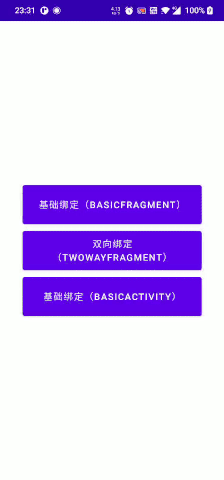
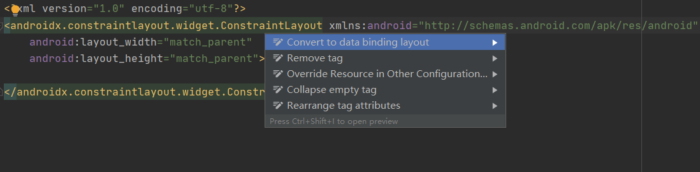
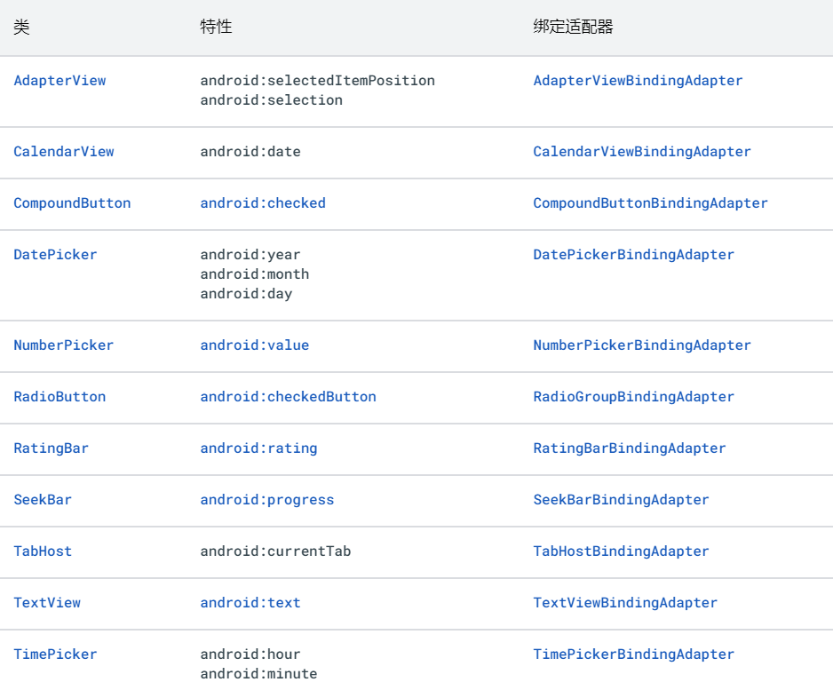

数据绑定库(
DataBinding)可以让我们声明式的将布局中的界面组件绑定到应用中的数据源。
官方文档
项目地址：https://github.com/android/databinding-samples
文档地址：https://developer.android.com/topic/libraries/data-binding
文档的内容很丰富，但是用些点介绍的有些简单一笔带过了，所以下面的介绍我会把认为重要的详细的一下，而有些内容我也就不做说明了。下面使用的Sample内容参考官方项目Sample,也会根据实际情况添加一些功能，用于调试说明
Sameple展示
它的效果大概是这样：

项目地址：https://github.com/J-a-g/GunDom/tree/navigation
使用入门
在需要使用DataBinding模块的build.gradle文件中添加dataBinding元素：
1 | android { |
注意：即使应用模块不直接使用数据绑定，也必须为依赖于使用数据绑定的库的应用模块配置数据绑定。也就是说如果
app依赖的module中使用了DataBinding那么app中也需要配置dataBinding = true。不然就会报错NoClassDefFoundError。
小技巧
快速生成DataBinding的layout布局
输入光标放到布局最外层，执行快捷键alt + enter选中Covert to data binding layout选项即可生成相应布局,如图所示

布局和绑定表达式
数据绑定布局文件和普通的布局文件略有不同，以根标记layout开头，后跟data元素和view根元素。如下：
1 | <?xml version="1.0" encoding="utf-8"?> |
<data><data>中的user变量描述了可在此布局中使用的属性,也就是值数据源。
1 | <variable |
布局中的表达式使用@{}语法写入特性属性中。在这里，TextView文本被设置为user变量的name属性：
1 | <TextView |
数据对象
Sample中使用到数据对象，ObservableXX下面在做介绍
1 | data class ObservableFieldProfile( |
用于android:text特性的表达式@{user.firstName}访问前一个类中的firstName字段和后一个类中的getFirstName()方法
绑定数据
系统会为每个布局文件生成一个绑定类。默认情况下，类名称基于布局文件的名称，它会转换为Pascal大小写形式并在末尾添加 Binding 后缀。以上布局文件名为activity_main.xml，因此生成的对应类为ActivityMainBinding。此类包含从布局属性（例如，user 变量）到布局视图的所有绑定，并且知道如何为绑定表达式指定值。
方式一:
1 | val user: ObservableFieldProfile = ObservableFieldProfile( |
方式二：
1 | val user: ObservableFieldProfile = ObservableFieldProfile( |
binding.user = user此时就完成了布局和数据的绑定，此时如果修改ObservableFieldProfile的lastName、like、url等值后，就会直接更新到UI中，但是修改name值并不会更新UI，为什么？下面再进行说明
表达式语言
常见功能
表达式语言与托管代码中的表达式非常相似。您可以在表达式语言中使用以下运算符和关键字：
- 算术运算符 + - / * %
- 字符串连接运算符 +
- 逻辑运算符 && ||
- 二元运算符 & | ^
- 一元运算符 + - ! ~
- 移位运算符 >> >>> <<
- 比较运算符 == > < >= <=（请注意，< 需要转义为 <）
- instanceof
- 分组运算符 ()
- 字面量运算符 - 字符、字符串、数字、null
- 类型转换
- 方法调用
- 字段访问
- 数组访问 []
- 三元运算符 ?:
示例：
1 | android:text="@{String.valueOf(index + 1)}" |
缺少的运算
您可以在托管代码中使用的表达式语法中缺少以下运算：
- this
- super
- new
- 显式泛型调用
视图引用
表达式可以通过以下语法按 ID 引用布局中的其他视图,如EditText改变内容后，直接再TextView中显示，就可以通过这个方式进行设置，在Sample中也有这样的应用，可以直接看源码，在fragment_two_way.xml中
注意：绑定类将 ID 转换为驼峰式大小写。
1 | <EditText |
集合
为方便起见，可使用 [] 运算符访问常见集合，例如数组、列表、稀疏列表和映射。 这部分内容在Sample中并没有应用这里不做说明，详见官方文档-集合
事件处理
通过数据绑定，您可以编写从视图分派的表达式处理事件（例如，onClick()方法）。事件特性名称由监听器方法的名称确定，但有一些例外情况。例如，View.OnClickListener有一个onClick()方法，所以该事件的特性为android:onClick。
Sample中主要使用到的方式如下,主要集中在fragment_basic.xml中：
1 | <Button |
导入、变量和包含
数据绑定库提供了诸如导入、变量和包含等功能。通过导入功能，您可以轻松地在布局文件中引用类。通过变量功能，您可以描述可在绑定表达式中使用的属性。通过包含功能，您可以在整个应用中重复使用复杂的布局。
这部分官方说明比较详细没有歧义所以不在赘述,详见官方文档-导入、变量和包含
使用可观察的数据对象
可观察性是指一个对象将其数据变化告知其他对象的能力。通过数据绑定库，您可以让对象、字段或集合变为可观察。
任何 plain-old对象都可用于数据绑定，但修改对象不会自动使界面更新。通过数据绑定，数据对象可在其数据发生更改时通知其他对象，即监听器。可观察类有三种不同类型：对象、字段和集合。当其中一个可观察数据对象绑定到界面并且该数据对象的属性发生更改时，界面会自动更新。解释上面遗留问题
可观察字段
在创建实现Observable接口的类时要完成一些操作，但如果您的类只有少数几个属性，这样操作的意义不大。在这种情况下，您可以使用通用Observable 类和以下特定于基元的类，将字段设为可观察字段：
- ObservableBoolean
- ObservableByte
- ObservableChar
- ObservableShort
- ObservableInt
- ObservableLong
- ObservableFloat
- ObservableDouble
- ObservableParcelable
可观察字段是具有单个字段的自包含可观察对象。原语版本避免在访问操作期间封箱和开箱。如需使用此机制，请采用 Java 编程语言创建 public final 属性，或在Kotlin中创建只读属性，如以下示例所示：如需访问字段值，请使用 set() 和 get() 访问器方法,在上面遗留问题中，1
2
3
4
5class User {
val firstName = ObservableField<String>()
val lastName = ObservableField<String>()
val age = ObservableInt()
}name因为只是普通的String字段所以修改后，并没有更新到UI到，而其他字段都是可观察字段所以其他值修改后会更新到UI上
可观察集合
略，Sample中没有使用到不做详细说明，详见官方文档-可观察集合
可观察对象
实现Observable接口的类允许注册监听器，以便它们接收有关可观察对象的属性更改的通知。
Observable接口具有添加和移除监听器的机制，但何时发送通知必须由您决定。为便于开发，数据绑定库提供了用于实现监听器注册机制的BaseObservable类。实现BaseObservable的数据类负责在属性更改时发出通知。具体操作过程是向getter分配Bindable注释，然后在setter中调用notifyPropertyChanged()方法，Sample中代码如下所示：
1 | class TwoWayData : BaseObservable() { |
绑定适配器 Binding adapters
简单的来说就是将代码中设置视图属性的逻辑代码，可以通过xml中的属性配置进行操作，如setText()我们通过android:test=""就可以显示了，那我们设想一下一个ImageView，我们要加载网络图片并设置占位图这个功能如何实现？下面进行说明
自动选择方法
即使不存在具有给定名称的特性，数据绑定也会起作用。然后，您可以使用数据绑定为任何 setter 创建特性。例如，支持类 DrawerLayout 没有任何特性，但有很多 setter。以下布局会自动将 setScrimColor(int) 和 setDrawerListener(DrawerListener) 方法分别用作 app:scrimColor 和 app:drawerListener 特性的 setter：
1 | <android.support.v4.widget.DrawerLayout |
指定自定义方法名称
一些属性具有名称不符的 setter 方法。在这些情况下，某个特性可能会使用 BindingMethods 注释与 setter 相关联。注释与类一起使用，可以包含多个 BindingMethod 注释，每个注释对应一个重命名的方法。绑定方法是可添加到应用中任何类的注释。在以下示例中，app:srcTest 属性与 setImageResource() 方法相关联：
1 | @BindingMethods( |
提供自定义逻辑
一些属性需要自定义绑定逻辑，这里就来解决上面通过通过xml中的属性来加载网络图片和设置占位符了
1 | @BindingAdapter("url", "error") |
参数类型非常重要。第一个参数用于确定与特性关联的视图类型，即这个属性是配置在那个控件上的，第二个参数用于确定在给定特性的绑定表达式中接受的类型。
如果您希望在设置了任意属性时调用适配器，则可以将适配器的可选 requireAll 标志设置为 false
1 |
|
绑定适配器方法可以选择性在处理程序中使用旧值。同时获取旧值和新值的方法应该先为属性声明所有旧值，然后再声明新值。
1 |
|
对象转换
自动转换对象
当绑定表达式返回 Object 时，库会选择用于设置属性值的方法。Object 会转换为所选方法的参数类型。对于使用 ObservableMap 类存储数据的应用，这种行为非常便捷，如以下示例所示：
1 | <TextView |
表达式中的 userMap 对象会返回一个值，该值会自动转换为用于设置 android:text 特性值的 setText(CharSequence) 方法中的参数类型。如果参数类型不明确，则必须在表达式中强制转换返回类型。
自定义转换
略…
双向数据绑定
双向数据绑定是指 源数据 和 `UI 之间是互相影响的。其一发生变化另一个也会跟着变化。要实现双向数据绑定需要满足如下条件：
- 源数据可监听
- @={} 表示法
Sample项目中，涉及到双向绑定的是TwoWayData、TwoWayFragment。TwoWayData就是一个可观察对象，TwoWayFragment的xml中主要实现了两个双向绑定的功能需求：
1.检测ToggleButton的点击状态，可以实现修改click值是UI点击状态发生改变，或者直接点击ToggleButton也会改变click的值
2.EditText显示时间戳并显示对应的时间格式，同时通过编辑修改时间后对应的时间戳的值也会发生变化
下面一个个分析，先看一下我们的数据对象：
1 | class TwoWayData : BaseObservable() { |
使用自定义特性的双向数据绑定
你可以使用常见的双向特性的属性，如果您希望结合使用双向数据绑定和自定义特性，则需要使用 @InverseBindingAdapter 和 @InverseBindingMethod 注释。
结合Sameple中的代码：
1.使用 @BindingAdapter，对用来设置初始值并在值更改时进行更新的方法进行注释：
1 | @BindingAdapter("textDate") |
2.使用 @InverseBindingAdapter 对从视图中读取值的方法进行注释：
1 | @InverseBindingAdapter(attribute = "textDate") |
此时，数据绑定知道在数据发生更改时要执行的操作（调用使用 @BindingAdapter 注释的方法）以及当 view 视特性发生更改时要调用的内容（调用 InverseBindingListener）。但是，它不知道特性何时或如何更改。
为此，您需要在视图上设置监听器。这可以是与您的自定义视图相关联的自定义监听器，也可以是通用事件，例如失去焦点或文本更改。将 @BindingAdapter 注释添加到设置监听器（用来监听属性更改）的方法中：
1 | @BindingAdapter("textDateAttrChanged") |
该监听器包含一个 InverseBindingListener 参数。您可以使用 InverseBindingListener 告知数据绑定系统，特性已更改。然后，该系统可以开始调用使用 @InverseBindingAdapter 注释的方法
转换器
EditText显示时间格式，但是传入的twoway.currentTime是Long，所以需要将Long转化成yyyy-MM-dd HH:mm:ss格式的字符串，此过程是通过向其中一个转换器添加 @InverseMethod 注释并让此注释引用反向转换器来完成的
1 | <EditText |
使用双向数据绑定的无限循环
使用双向数据绑定时，请注意不要引入无限循环。当用户更改特性时，系统会调用使用 @InverseBindingAdapter 注释的方法，并且该值将分配给后备属性。继而调用使用 @BindingAdapter 注释的方法，从而触发对使用 @InverseBindingAdapter 注释的方法的另一个调用，依此类推。
因此，通过比较使用 @BindingAdapter 注释的方法中的新值和旧值，可以打破可能出现的无限循环。
双向特性
当您使用下表中的特性时，该平台提供对双向数据绑定的内置支持。

总结
DataBinding的优缺点总结：
优点
- 不用再写
findViewById，提高性能 DataBinding作为MVVM架构中重要的组成部分,起到分离视图层和数据层的作用
缺点
bug定位困难，出现问题基本只能看到DataBinding类无法生产- 代码补全效果不太好
- 学习成本高